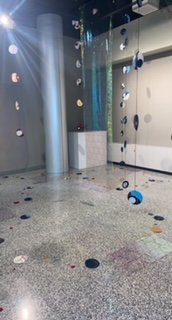

I’m a design student, waitress, dog lover, and music snob.
I go to MSU Mankato and am working towards my BFA in Graphic Design. While going to school I fell in love with installation art, and that is my second concentration. I got into graphic design when I realized how much I loved creating power points, posters, and the yearbook in high school. I have a passion for seeing live music, and hope to work in that industry as a designer.
Here is an installation I created called "Circles".
I’m from Estherville, Iowa but I truly love Minnesota so that’s why I go to school here. I have two bulldogs and two sisters that I love to death. My dream is to have a design job working for a music-related company or an art studio somewhere in the midwest so I can stay close to my family. In 5 years I hope to have:
I’m excited to learn more web coding and I’m hoping to gain more of an interest and love for it since it’s such a helpful skill to be into. I feel in the dark on web design so I’m hoping to gain a basic knowledge that will stick with me throughout my career.